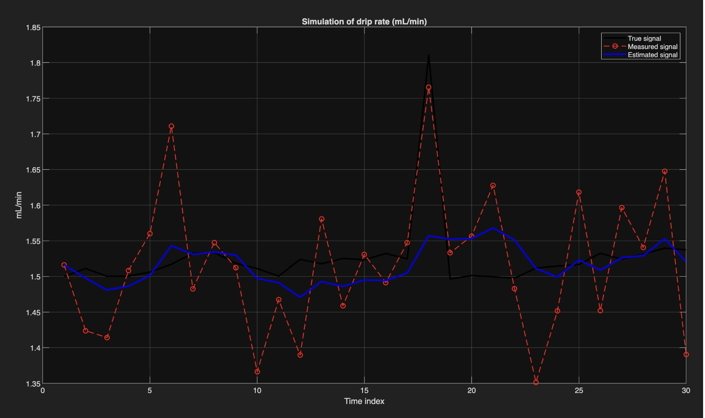

Final project — TechBasics II & a Kalman-filter seminar
drip.py
An infusion-drip monitor built from a nurse's frustration: drop rates on a gravity infusion are still counted by eye and a wristwatch. drip.py watches the chamber for you — and, more interestingly, learns to trust what it sees.

The first sketch — before any wiring existed.

The working prototype.
How it works
An infrared beam sits across the drip chamber. Every falling drop breaks the beam for an instant; the Arduino counts those interruptions and turns them into a rate, using the clinical rule of thumb that about twenty drops make a millilitre.
The live rate shows on a small OLED display. An RGB LED gives the at-a-glance reading a nurse actually wants from across a room: is the flow too slow, about right, or running too fast?
| Hardware | |
|---|---|
| Board | Arduino Uno |
| Sensing | IR break-beam across the drip chamber |
| Display | SSD1306 OLED (I²C) |
| Signal | RGB LED, three states |
| Software | |
|---|---|
| Firmware | C++ (Arduino IDE) |
| Display lib | U8g2 |
| On device | Exponential moving average |
| Estimation | Kalman filter (MATLAB) |

The turn
The sensor didn't behave. The curved plastic chamber and the moving liquid scatter infrared light, so the beam was constantly half-broken — false counts, impossible drop rates, a signal that looked more like noise than measurement.
That failure became the actual project. The question stopped being "how do I detect a drop" and became "how do I recover the true flow rate from a measurement I can't trust?"
The project shifted from building a system that measures to building one that interprets uncertain reality.
The Kalman layer
In a parallel statistics seminar I'd been learning about the Kalman filter — a method for estimating the hidden state of a system by combining a prediction with each noisy new measurement, weighting them by how much each can be trusted.
That's exactly the drip problem. The true flow rate is the hidden state; the IR sensor gives a noisy observation of it. In the simulation, the estimated signal stays close to the true flow while the raw measurement jumps around it — the filter refuses to overreact to a single strange reading, which is precisely the behaviour a monitoring system needs.

Simulated drip rate — true signal (black), noisy measurement (red), Kalman-estimated signal (blue).
What it is, and isn't
drip.py is a working proof of concept, not a medical device — it isn't calibrated or validated for clinical use, and it isn't meant to be. What it demonstrates is a way of thinking: that a healthcare observation problem can be translated into a physical build, and that the honest answer to an unreliable sensor is often better interpretation, not better hardware.
Full code, MATLAB implementation and documentation: github.com/sasokru/FinalProject25-26